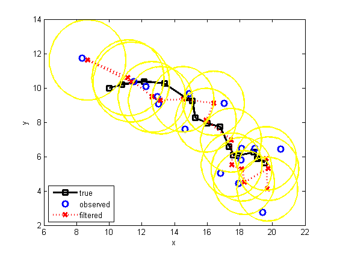
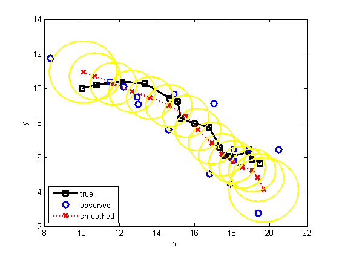

ss = 4;
os = 2;
F = [1 0 1 0; 0 1 0 1; 0 0 1 0; 0 0 0 1];
H = [1 0 0 0; 0 1 0 0];
Q = 0.1*eye(ss);
R = 1*eye(os);
initx = [10 10 1 0]';
initV = 10*eye(ss);
setSeed(9);
T = 15;
[x,y] = kalmanSample(F, H, Q, R, initx, T);
[xfilt, Vfilt, VVfilt, loglik] = kalmanFilter(y, F, H, Q, R, initx, initV);
[xsmooth, Vsmooth] = kalmanSmoother(y, F, H, Q, R, initx, initV);
dfilt = x([1 2],:) - xfilt([1 2],:);
mse_filt = sqrt(sum(sum(dfilt.^2)))
dsmooth = x([1 2],:) - xsmooth([1 2],:);
mse_smooth = sqrt(sum(sum(dsmooth.^2)))
figure; hold on
plotArgs = {'LineWidth', 2.5, 'MarkerSize', 8};
plot(x(1,:), x(2,:), 'ks-', plotArgs{:});
plot(y(1,:), y(2,:), 'bo', plotArgs{:});
plot(xfilt(1,:), xfilt(2,:), 'rx:', plotArgs{:});
for t=1:T
gaussPlot2d(xfilt(1:2,t), Vfilt(1:2, 1:2, t), '-color', 'y');
end
legend('true', 'observed', 'filtered', 3)
xlabel('x'); ylabel('y'); box on;
figure; hold on
plot(x(1,:), x(2,:), 'ks-', plotArgs{:});
plot(y(1,:), y(2,:), 'bo', plotArgs{:});
plot(xsmooth(1,:), xsmooth(2,:), 'rx:', plotArgs{:});
for t=1:T,
gaussPlot2d(xsmooth(1:2,t), Vsmooth(1:2, 1:2, t), '-color', 'y'); end
legend('true', 'observed', 'smoothed', 3)
xlabel('x'); ylabel('y'); box on;
mse_filt =
5.0578
mse_smooth =
3.2473
 